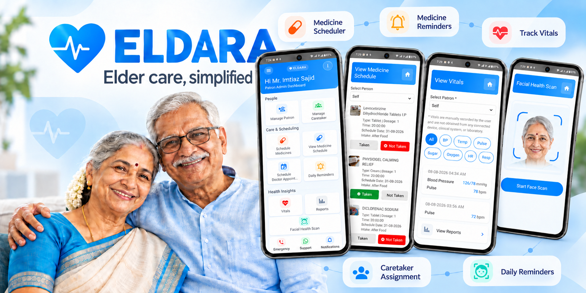
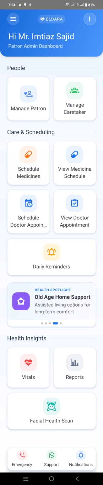
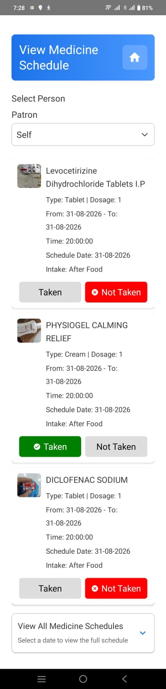
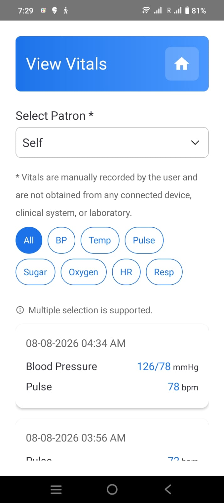
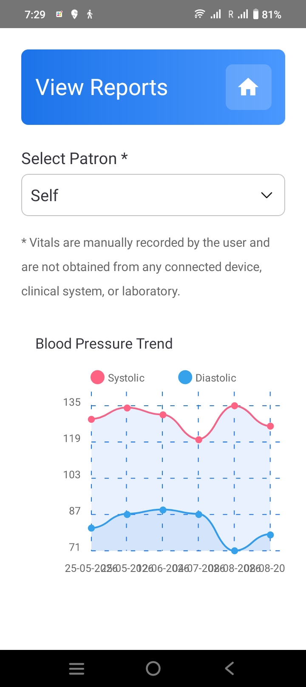
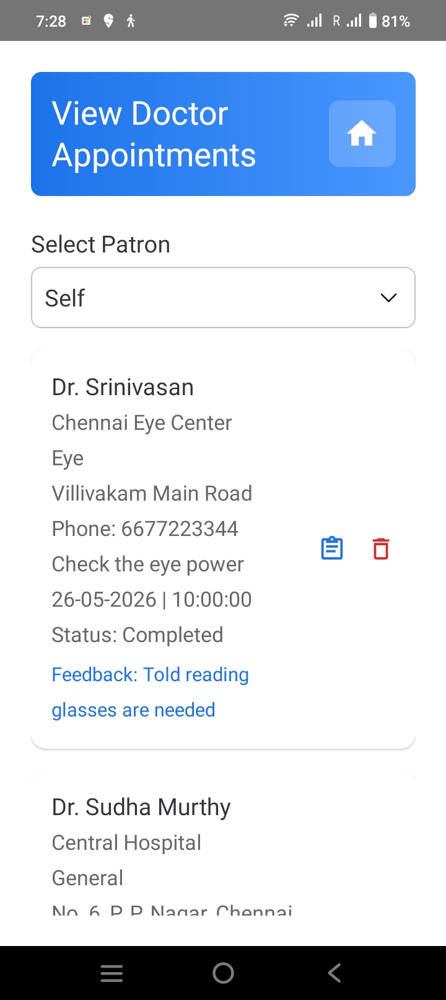
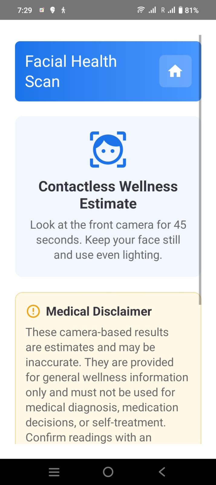

ELDARA is Prochele's elderly care app for India, designed to help families, patrons, and caretakers coordinate everyday care for elderly people, people living with dementia, and adults of all ages.

Elder care, simplified
Support everyday care with a medicine scheduler, medicine reminders, doctor appointments, daily activity reminders, vitals monitoring through manually entered records and reports, wellness check-ins, a personal step counter, and caretaker connections.
Medicine schedulerMedicine remindersTrack vitalsDoctor appointmentsReportsCaretaker assignmentWellness check-insPersonal step counterCaretaker connectionsDaily activity remindersEmergency supportNotificationsFacial health scan
Available features
Daily wellness
Record wellbeing, sleep, mood and discomfort, and review a 7-day history.
Keep assistance requests for daily support and appointments within the app.
Authorised care roles can view Wellness; caretakers see only their currently assigned patrons.
My walking and step counter
Use the step counter during a walk on a supported phone, or add a manual walk.
View steps, distance, active time, personal goals and a 7-day history.
Walking records stay personal to the account and are not shared with family or caretakers.
Phone tracking pauses when you leave the walking screen, lock the phone or background the app.
Caretaker connections
Find registered caretakers and review profiles, working hours, availability and reviews.
Send a contact request and use a private inbox after acceptance.
Propose dated care assignments for the caretaker to confirm, and keep assignment history.
People and care roles
Manage patrons and caretakers.
Assign caretaker responsibilities.
Support family care coordination.
Medicine scheduler and reminders
Schedule medicines with dosage, timing, dates, and intake notes.
View daily medicine schedules.
Mark medicines as taken or not taken.
Use medicine reminders and daily activity reminders for routine care tasks.
Doctor appointments
Schedule and view doctor appointments.
Record doctor, clinic, specialty, location, phone, purpose, status, and feedback.
Vitals monitoring and reports
Record vitals manually, including blood pressure, temperature, pulse, sugar, oxygen, heart rate, and respiration.
Keep track of recorded readings; ELDARA does not continuously measure these vitals.
View trend reports such as blood pressure charts.
Health spotlight and support
Display health insights and support information.
Provide access to emergency, support, and notification actions.
Facial health scan
Camera-based contactless wellness estimate.
Includes medical disclaimer language for responsible use.
App screenshots
Explore Wellness, My walking and Caretaker connections, alongside ELDARA's medicine schedules, appointments and health records. The new screens use demonstration data.
Caretaker connections: discover registered caretakers, review availability and manage conversations and assignments.

Patron dashboard with care, scheduling, insights, emergency, support, and notifications.

Medicine schedule with dosage, date, intake guidance, and taken or not taken status.

Manual vitals recording and filtering for BP, temperature, pulse, sugar, oxygen, HR, and respiration.

Report view with blood pressure trend charts for ongoing observation.

Doctor appointment records with specialty, place, time, status, and feedback.

Contactless wellness estimate with visible medical disclaimer for responsible use.
ELDARA supports everyday care organisation and general wellbeing. It is not a medical device or an emergency service and does not replace professional medical advice. Assistance requests stay within the app; they do not dispatch an outside provider or emergency help.